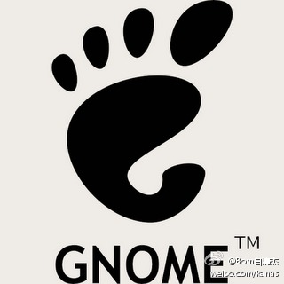
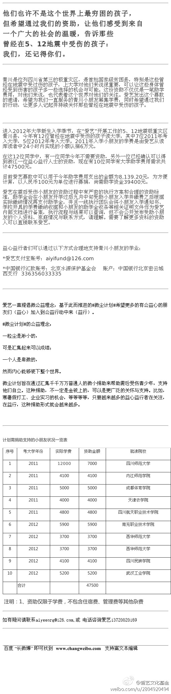

自由软件日的活动参加过几次了。按照自由软件日精神，任何人都可以在九月的第三个周末，用自己喜欢的方式，在当地发起一个活动，来参与这个全球的庆祝仪式。@美乐家艾瑶瑶妈妈的快乐生活:开源盛宴--自由软件日 @车库咖啡 站 今年@北京GNOME用户组 联合@车库开源技术小组 举办自由软件日庆祝活动，今年的话题以社区为主，目前邀请到了@ZoomQuiet @Ada李力 @forestzrd @Freeman小屋 @ben_杜玉杰 intel的陈绪和大家分享.活动报名：网页链接 
替靠谱公益人士@cleverpig 转，为四川青山县的孩子上大学筹措学费，100元起捐，接受支付宝。红十字会毁坏了国人信心，尝试相信民间微公益。@爱艺文化基金:他们也许不是这个世界上最穷困的孩子，但希望通过我们的资助，让他们感受到来自一个广大的社会的温暖，告诉那些曾经在5、12地震中受伤的孩子：我们，还记得你们。 青川是位列四川省第三的极重灾区，是首批国家级贫困县，特别是这些身体受过伤的孩子@mark 
规则大还是人性大? 同学毕业后就在一央企银行工作，聊天时说起一留学归国年轻教授自杀，起因是七名同事联名举报他生二胎，他面临被开除。同学并不同情自杀者，认为知道这样做的后果，还要生，首先是自己的问题。我觉得奇怪，不合理的规则一定要遵守吗? 另外，我愤怒的是举报人损人不利己。
姐姐因女儿慧慧考上上海中学，很是开心了一阵，接受了来自各方的祝贺羡慕，独有一位交情不错的同事在我姐面前绝口不提这事，姐姐谈起也会被转走话题，她很不爽，觉得同事嫉妒。我觉得吧，让所有人都羡慕你的这种想法本来就不对。[呵呵]
言传身教，重点是后两字。@lijianchina:早饭的时候旁边坐了一对带着小孩的夫妻。席间，妈妈向爸爸描述自己怎么用各种理由逃班，孩子睁着大眼认真地听着。妈妈刚说完，孩子就说:”妈妈还有一个理由，你可以和老板说，我病啦。”每对父母在抱怨孩子学习不好，找理由不上学时，请首先审视一下自己的言行。孩子只是上天派来的模仿者。
明俊提议周末爬山，虽然预报有雨，而且晚上是暴雨，但鉴于之前几次天气虚报，我们还是出来了，结果现在我们一家三口就在农家大院避雨，同一雨蓬下还有驴友，登山爱好者，骑行者，还有一对流浪的父子。 我在:网页链接
回复@罐头_WANG:我之前的HTC港台版，安卓2.7，就是推送信息一堆，还找不出是哪个烂应用发的。这次换三星欧亚版，安卓4.1，手机还是装同样的应用，推送少多了。一旦出现推送，立刻删应用。 //@罐头_WANG:长按提示信息，会出现“应用信息”的菜单出来， 点进去就是对应的进程了。4.1系统，不知道其他是不---:该账号因被投诉违反《微博社区公约》的相关规定，现已无法查看。查看帮助 网页链接
请多几个发展好的员工来正大光明支持这条"超级雇主"的微薄。 //@甲骨文杨姝:这也挺可悲的，看来O记人心不齐，雇主品牌的建设还要继续！不过通过评论就可以看出对公司正面支持和正向思维的，都是在公司发展好的。不然总是抱怨是很难有长足发展的！ //@荤兔子妞妞:@猎聘APP:#超级雇主#【Oracle篇之人在Oracle】超级雇主给员工们的福利待遇都有哪些呢？帮员工找妹纸解决终身大事不稀奇，那么帮员工找到好基友呢……好吧，多做一步，感动员工…… 大家也晒出自己的待遇比拼一下吧！你超越超级雇主了吗？ 网页链接 @甲骨文招聘 @雁雨亭 @甲骨文杨姝
 网页链接
网页链接